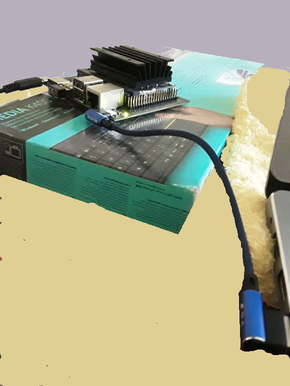

NVidia Jetson Nano Wifi
GPU geliştirmesi için Jetson Nano ürünü var, Türkiye'de 100 dolar civarı fiyatla satılıyor. Altta görülen Nano 2GB Wifi ürünü. Güç kaynağı bu pakete dahil değil, 5 Volt, 3 Amperlik bir adaptor almak lazım. Raspberry Pi uyumlu bu tür adaptörler var.
Paketten iki tane ek kablo çıkacak, bunlardan birinin ucunda bir ufak "dongle" var, üzerinde CE yazıyor, bu Wifi özelliği sağlıyor (dongle kabloya bağlı geliyor, o çıkartıldıktan sonra kabloya gerek yok), alttaki resimde devrenin sol altında. Diğer kablonun bir ucu dizüstüne, diğeri Nano'ya takılacak, nihai resim

İşletim sistemi mikro SD kart üzerinden, en az 64 GB iyi olur, işlemler aynen Raspberry Pi durumunda olduğu gibi. Orada olduğu gibi yine işletim sistemi indirilecek, ve SD'ye "yakılacak". Mikro SD de pakete dahil değil ayrıca alınması lazım.
https://developer.nvidia.com/jetson-nano-2gb-sd-card-image
Şöyle bir komutla indirebilir,
wget --continue https://developer.download.nvidia.com/assets/embedded/downloads/jetson-nano-2gb-jp441-sd-card-image/jetson-nano-2gb-jp441-sd-card-image.zip
Büyük bir dosya dikkat. İndirildikten sonra yakmak için Etcher adlı bir program kullanılır,
Etcher
https://www.balena.io/etcher/
https://phoenixnap.com/kb/etcher-ubuntu
Zip indirilir, açılır, içinde bir işler program var, tıklanır, görsel programla yakma yapılır (Nano imajı seçilir, hedef seçilir, yak denilir).
Yakma işlemi bitince kart Nano'ya sokulur, bağlantılar yapılır, ve sistem başlayınca HDMI üzerinden monitöre bağlanılıp, fare, klavye Nano'ya bağlanılıp oradan kuruluma devam edilir. Burada isim, kullanıcı ismi, şifre, coğrafi yer vs sorulacak, bu bilgileri gireriz. Wifi bağlantısı orada görülecek, Wifi şifresi girilince bağlantı kurulacaktır. Wifi bağlantısı Nano'nun dışarıdan program indirmesi için faydalı, ama Nano'ya bizim girmemiz için şart değil.
Aradaki o mavi kablo üzerinden seri bağlantıya dikkat, dizüstündeki Ubuntu üzerinde
$ dmesg | grep --color 'tty'
[106921.687362] cdc_acm 1-2:1.2: ttyACM0: USB ACM device
deyince üsttekini görebilmek lazım. Ya da ls /dev/tty* ile bakarsak
orada bir /dev/ttyACM0 olmalı.
Şimdi
sudo screen /dev/ttyACM0 115200
seri bağlantı üzerinden ile sisteme girebiliriz, bunu bir kere /
gerektiğinde yapmak yeterli, IP adresini almak için. Nano sistemi o
seri bağlantı üzerinden bir yerel Ethernet bazlı bir ağ yaratıyor,
Ubuntu tarafında bu ağın görülmüş olması lazım. NVidia Ethernet
Connection ve Wired Connection gibi ifadelerin ağ listesinde
görülüyordur herhalde. Ethernet'i seçmek, aktif hale getirmek gerekir.
Neyse bir kerelik seri bağlantından girince ifconfig -a ile sistemin
IP adresini alırız, bende l4tbr0 birimine bağlı olan IP'yi aldım,
ardından ben tüm ek işlemleri ssh kullanıcı@IP ile Nano'ya ssh
girerek ayrı bir ekranda yapıyorum.
Yeni sistemimizi kontrol edelim. ssh ile girip,
sudo nvpmodel -q
NVPM WARN: fan mode is not set!
NV Power Mode: MAXN
0
görülebilir, bu GPU durumunu raporladı. CUDA ekleri olan C++
derleyicisi için nvcc erişimi lazım,
vim ~/.bashrc
Ve dosya sonuna
export PATH=${PATH}:/usr/local/cuda/bin
export LD_LIBRARY_PATH=${LD_LIBRARY_PATH}:/usr/local/cuda/lib64
ekleriz, kaydederiz, ve komut satırına dönüp,
source ~/.bashrc
işletiriz, şimdi
nvcc --version
nvcc: NVIDIA (R) Cuda compiler driver
Copyright (c) 2005-2019 NVIDIA Corporation
Built on Wed_Oct_23_21:14:42_PDT_2019
Cuda compilation tools, release 10.2, V10.2.89
göstermeli.
Not
Kurulum işlemini tamamen seri bağlantı üzerinden text bazlı da yapmak mümkün, alttaki video'da anlatılıyor, macera isteyenler bunu seçebilir, o zaman monitör vs bağlantısına gerek kalmaz.
PyCuda
Alttaki komutları yine Nano komut satırında işletiyoruz,
sudo apt install python3-pip
pip3 install cython
pip3 install pycuda
Acaba dizüstünde geliştirip Nano'ya işletmek için sürekli gönderme
yapabilir miyiz? Evet. Hatta uzaktaki bir dizini sshfs ile
monteleyebiliriz, bkz şuradaki ssh
yazı. Sonra PyCuda yazısındaki herhangi bir örneği alırız,
GPU tipini gösteren örnek mesela, onu tst.py diye dizüstünde
kaydedelim, sonra mesela tüm kodların Nano üzerinde
/home/user/Documents dizininde olacak şekilde
ssh burak@nano1 "/bin/bash /home/user/Documents/pygpu.sh $1"
Nano üzerinde /home/user/Documents/pygpu.sh dosyası lazım, uzaktan o
çağrılıyor (direk python3 çağırmak ise yaramayabilir çünkü bazı
çevre değişkenlerinin set edilmesi lazım), onun içeriği
export PATH=${PATH}:/usr/local/cuda/bin
export LD_LIBRARY_PATH=${LD_LIBRARY_PATH}:/usr/local/cuda/lib64
/usr/bin/python3 /home/user/Documents/$1
Script'i run.sh olarak kaydetsek, sh run.sh tst.py ile cağrınca bu
uzaktan ssh ile o dosya üzerinde python3 işletilmesini
sağlar.
Tabii tüm bu numaralar bir yana Nano'ya login edip komutu direk orada
da işletebiliriz. O komut satırının ayrı durması için o pencereye
farklı bir renk vermek iyi olur, benim Nano .bashrc de şu satır ekli,
PS1='${debian_chroot:+($debian_chroot)}\[\033[01;35m\]\u\[\033[01;30m\]@\[\033[01;32m\]\h\[\033[00m\]:\[\033[01;34m\]\w\[\033[00m\]\$ '
Eğer mesela matplotlib kurmak istersek,
sudo apt install libfreetype6-dev
pip3 install matplotlib==2.0
gerekli. En son matplotlib hata verdi. Kod icinde goruntusuz isletmek icin
import matplotlib; matplotlib.use('Agg')
gerekebilir.
Devam edelim, tst.py işletince bizde
Device 0: NVIDIA Tegra X1
Compute Capability: 5.3
Total Memory: 1979 megabytes
sonucu geldi. PyCuda işliyor demektir.
Bir kere arada ssh bağlantısı kurulunca daha ilginç şeyler de
yapılabilir, ssh üzerinden görsel X tünellemesi mesela, Nano
üzerinde görsel program işletip sonucu kendi makinamızda görebiliriz,
ya da Jupyter servisi işletip dizüstü tarayıcısı ile ona
bağlanabiliriz, vs. Ben kendi açımdan Nano üzerindeki yükü az tutmaya
uğraşıyorum.
Test olarak alttaki kodu islettik,
import numpy as np
import pycuda.autoinit
from pycuda import gpuarray
from time import time
from pycuda.elementwise import ElementwiseKernel
host_data = np.float32( np.random.random(10**7) )
gpu_2x_ker = ElementwiseKernel(
"float *in, float *out",
"out[i] = 2*in[i];",
"gpu_2x_ker")
# hizlandirma icin onceden ufak veri uzerinde islet
host_data_small = np.float32( np.random.random(10) )
device_data_small = gpuarray.to_gpu(host_data_small)
device_data_2x_small = gpuarray.empty_like(device_data_small)
gpu_2x_ker(device_data_small, device_data_2x_small)
t1 = time()
host_data_2x = host_data * np.float32(2)
t2 = time()
print ('CPU: %f' % (t2 - t1))
device_data = gpuarray.to_gpu(host_data)
device_data_2x = gpuarray.empty_like(device_data)
t1 = time()
gpu_2x_ker(device_data, device_data_2x)
t2 = time()
from_device = device_data_2x.get()
print ('GPU: %f' % (t2 - t1))
CPU: 0.031684
GPU: 0.000274
GPU'nun 115 kat daha hızlı olduğunu görüyoruz. İlginç Nano üzerindeki çekirdek sayısı da 128 değil mi?
VNC
ssh -X ile bağlanınca Nano'da X programlarının çıktısını direk
bağlandığımız diğer bir makinaya aktarabiliriz, fakat ne yazık ki
ÖpenGL görüntüleri bu şekilde aktarılamıyor. Acaip hatalar
görüyorsunuz (alttaki paragrafta bir uyarı daha var), fakat monitörle
Nano'ya bağlanınca herşey iyi işliyor. Burada çözüm VNÇ kullanmak.
Not: OpenGL içeren kodları arka plandaki çıktısını ssh üzerinden
görmek istersek, ve ssh -X ile girdiysek grafik çağrıları
patlar. Grafik çağrıların yok sayılmasını sağlamak için (ki böylece
cout ile eklenen log mesajlarını görebilelim) pür ssh ile girmek
lazım.
VNC programlarını kullanmışızdır, bu programlar ile bir bilgisayarın
tüm masaüstünü kendi makinamızda görebiliriz. Nano'da bunu yapmak için
birkaç adımı uygulamak lazım, [6,7,8] kaynaklarına bakabiliriz. Yanlız
dikkat, sadece [8] yöntemi vino servisi eğer monitör bağlı değilse
işlemiyor (VNC'nin tüm faydaları sıfırlanmış oluyor yani). VNC düzgün
işlemesi için Nano Unix kullanıcınızın otomatik olarak sistem
başlayınca login olmasını sağlamak lazım, bkz [6,7]. Ubuntu User
Accounts penceresinden Automatic Login aktif edilmeli. Tabii bu
ekrana gelebilmek için de masaüstü idarecisi Unity olmalı, diğer
idarecilerle buraya ulaşamadık. Eğer o değilse Unity'ye geçmek için
monitorle bağlandığımız Nano Ubuntu'dan kullanıcı çıkışı (logout)
yaparız, sonra tekrar giriş sırasında şifre girilen kutunun yanında
ayak izi ikonu var, ona tıklayınca orada idareci seçenekleri çıkacak,
burada Unity seçeriz, ve sisteme böyle gireriz. Servis tarafı böyle
ayarlanır.
Nihayet müşteri tarafı bağlanmasına geldik, dizüstü bilgisayarında
benim Ubuntu 18'de remmina programı var, bu programa İP adresini
verip bağlanma metotu olarak VNC seçersek, artık Nano'ya görsel olarak
bağlanabiliriz.
Bir diğer seçenek, aynen Raspberry Pi durumunda olduğu gibi, ufak bir elle tutulan HDMI monitör ve dongle'li klavye/mouse donanımı almak, bu ikisini direk Nano'ya bağlayınca her şeyi, hiç dizüstünden geçmeden, Nano üzerinde yapabiliriz. Nano tek başına oldukca kuvvetli bir bilgisayar, eh kendi Ubuntu'su var, tam tekmilli bir bilgisayar olarak kullanılabilir.
Örnek Cuda Kodları
C++ üzerinden CUDA kodlamak için Nano üzerinde bolca örnek var. Bu
örnekler SD yakma işlemi sırasında Nano'ya tranfer edilmiş oldu,
örnekler /usr/local/cuda-[versiyon]/samples altında
bulunabilir. Derlemek için bu dizini tamamen kopyalayıp user için
mesela /home/user altında bir yerlere koymak en iyisi, yoksa
/usr/local için izin hataları verilebilir.
Bu kopyada make uygularız, o komut tüm örnekleri derler. nvcc
ayarlarını üstte anlattık, derleme işlemi onu kullanıyor. Tüm derleme
işlemi biraz uzun sürecek, ama bitince her örnek işletilir halde hazır
olacaktır. Mesela samples/5_Simulations/oceanFFT altında
./oceanFFT örneğini işletebiliriz, Nano monitöründen ya da VNC
üzerinden görebiliriz, su simulasyonu gayet güzel görülüyor.
Particles
Bu örnek kodlardan partıcles adlı projenin görsel kodları mümkün olduğu kadar çıkartılmış hali altta bulunabilir,
Makefile, particles.cpp particleskernel.cuh, particleskernelimpl.cuh, particleSystem.cpp, particleSystemcuda.cu, particleSystem.cuh, particleSystem.h, view.py
Tensorflow
Jetson üzerinde Tensorflow kurulumu için hangi Jetpack geliştirme ortamına sahip olduğumüza bakalım,
sudo apt-cache show nvidia-jetpack
Ben gördüğüm versiyona göre [10]'a danıştım, ve gerekli wheel .whl
dosyasını indirdim,
wget https://developer.download.nvidia.com/compute/redist/jp/v44/tensorflow/tensorflow-2.2.0+nv20.7-cp36-cp36m-linux_aarch64.whl
Sonra bu dosyayı ayrı bir virtualenv içinde
pip3 install tensorflow-2.2.0+nv20.7-cp36-cp36m-linux_aarch64.whl
ile kurduk.
Kaynaklar
[1] https://imadelhanafi.com/posts/jetsonnanosetup/
[2] https://developer.nvidia.com/embedded/learn/get-started-jetson-nano-2gb-devkit
[3] https://developer.nvidia.com/embedded/learn/get-started-jetson-nano-devkit#setup
[4] https://developer.nvidia.com/embedded/learn/get-started-jetson-nano-2gb-devkit#write
[5] https://youtu.be/Ch1NKfER0oM
[6] https://medium.com/@bharathsudharsan023/jetson-nano-remote-vnc-access-d1e71c82492b
[7] https://www.hackster.io/SaadTiwana/embedded-diaries-simple-remote-desktop-access-for-jetson-c1300a
[8] https://developer.nvidia.com/embedded/learn/tutorials/vnc-setup
[9] https://www.youtube.com/watch?v=KROP46Wte4Q
[10] [Forum](https://forums.developer.nvidia.com/t/correct-version-of-tensorflow-for-jetpack-4-4/149310/3)